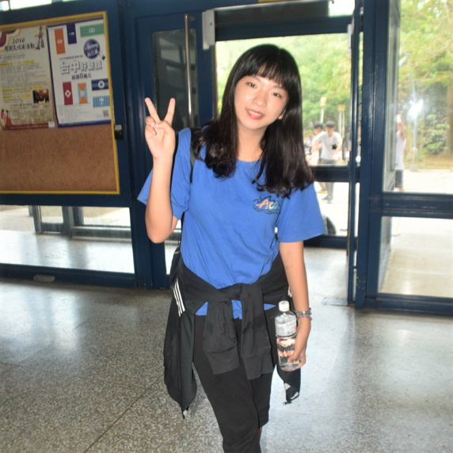

公司職員簡介
姓名 : 彭毓之
職稱 : 原文股長、2017假日營早操股長、2018冬令營公隊股長
入社年份 : 2015-2017
特殊表現 :原文大聲公紀錄保持人、素食主義倡議與實踐者、【腰瘦正】健康瘦身錠廣告代言人、林立玄緋聞男友、貌似原文安潔莉娜
員工表現

雅淳
之之 你大四的這年真的好少遇到。不過你應該過得不錯，還變瘦變漂亮，真的崇拜你。沒想到你也要畢業了，我會很想你的，希望你一切順利。
ㄐㄩ
寶貝愛之殿下♥ 如果原文父親是王宇航的話，你應該就是我的原文媽媽ㄌ，或者更精確地說，不只原文，大學生涯裡走過太多你走過的路，也從你身上得到很多東西，知識也好、為人處事也好，能在大學交到你這麼好的一個朋友真的是我上輩子有燒一些香。 這一年，我們雖然不常見面，但看到妳的近況不錯，我也替妳高興，未來的路還很長，希望未來的妳一樣勇敢、一樣堅強、也一樣漂亮，畢業快樂♥
可綠
好久沒遇到你了想你!阿之是一個很熱情的人,很喜歡跟你聊天!跟你聊天總是能讓我獲得一些我不曾想過的觀點,很有收穫!看你身在粉紅泡泡顯露出小女人的一面實在是件很有趣的事哈哈!祝你一切順利,畢業快樂!
依潔
好久沒遇到你了，我記得你做事都很有活力很認真，希望你之後也一直是活力阿之，畢業快樂！
硬魚
從大一就一直覺得你是個很厲害的人物，大學接了好多外務然後都用得有聲有色，還有就是很有意志力！(尤其減肥的部分)(雖然有點吵哈哈)，總之就是畢業快樂拉你會幸福的
筠宣
阿之，謝謝妳好多好多。我的第一個活動就是早操，遇見原文最吵的妳們兩個，真的很適合早操這個職業（？ 我一直都覺得，天那這個姐姐怎麼可以一邊這麼吵一邊這麼漂亮。認識妳更久之後，覺得妳是很認真生活，也很關心社會的一個人，而且寫的文章總是讓我很有感覺，看妳說這學期通勤之後和清華的交流更少了，但我還是想給妳祝福，需要都可以再來找我們的！妳說在備考時期，不知道是甚麼考試，所以就祝妳考試順利跟畢業快樂～
斈恩
阿之阿之<3妳大四這年真的好少碰到妳，甚至也很少看到妳的臉書或IG動態，但我沒有忘記妳唷！剛進原文的時候，妳是我很大的定心丸(因為我真的很害怕自己沒辦法帶公隊)。現在的你應該過得很好！而且看到你的感情生活感覺很美滿我是真的替你開心<3希望未來的你也能一直順心而幸福，畢業快樂阿之！